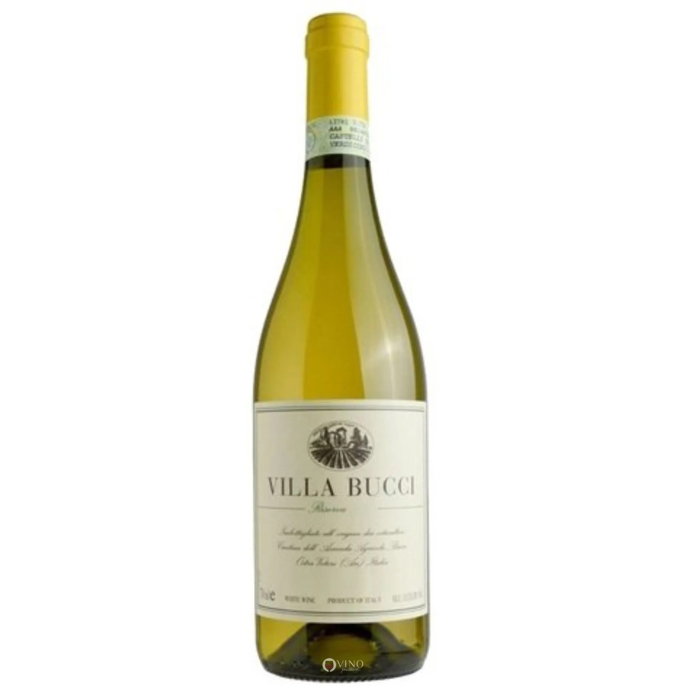

Villa Bucci Verdicchio dei Castelli de Jesi Riserva Vinho Branco Italiano

O vinho Il Verdicchio dei Castelli di Jesi Classico Superiore 2019 di Bucci é o melhor vinho branco do mundo. Ele foi premiado pelos especialistas do Wine Enthusiast ficando em segundo lugar absoluto na classificação mundial dos “100 most exciting wines 2021“, atrás apenas de um vinho tinto francês. Nossa vinheria consta com o melhor sensor de temperatura, que mantem este vinho perfeitamente em 7 graus, mantendo seu refinado sabor leve, seco e frutado citrico.
Paladar muito intenso, meio seco, volumoso e macio no final longo.
Catena Carbenet Sauvignon Vinho Tinto francês
Catena Zapata é um vinícola argentina com mais de um século de tradição, conte um pouco dessa história. Catena Zapata foi fundada em 1902 por um imigrante italiano chamado Nicola Catena, que chegou do centro da Itália, da região de Marche, com um grande sonho e uma grande paixão pelo vinho.
sofisticado, maduro, bastante complexo, com camadas de um Bordeaux, contemplado por diversos críticos, com uma nota de 17,5/20, safra 2010.
Mateus Rosé Vinho Rosé Português
essa semana de férias, a boa descoberta foi o MATEUS. Um rosé leve e jovem da portuguesa SOGRAPE. Um vinho suave, embora inicialmente aparente ser mais alcoolico do que de fato é (somente 11 graus), e apresente um aroma cítrico intenso. Sua coloração é salmão, mas bem claro e brilhante. A opção por esse Rosé foi acompanhar peixes e checar a fama. Diz-se que é o Rosé mais vendido no mundo… O produtor contabiliza 1 bilhão de garrafas vendidas em 60 anos. Outro aspecto de destaque é a garrafa, num formato pouco ortodoxo, assemelha-se a um cantil com um longo gargalo. MATEUS ROSÉ é produzido com castas tintas portuguesas: Baga, Rufete, Tinta Barroca e Touriga Franca.
é um vinho fresco e sedutor com boa intensidade aromática e toda a jovialidade dos vinhos jovens. Na boca, é um vinho muito equilibrado e tentador, brilhantemente complementado por um final suave e ligeiramente pétillant.